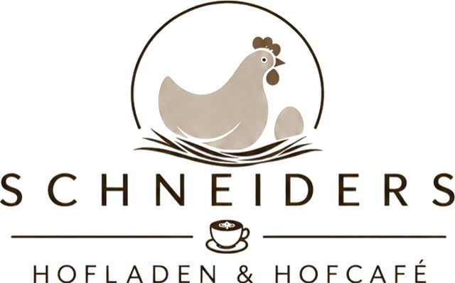
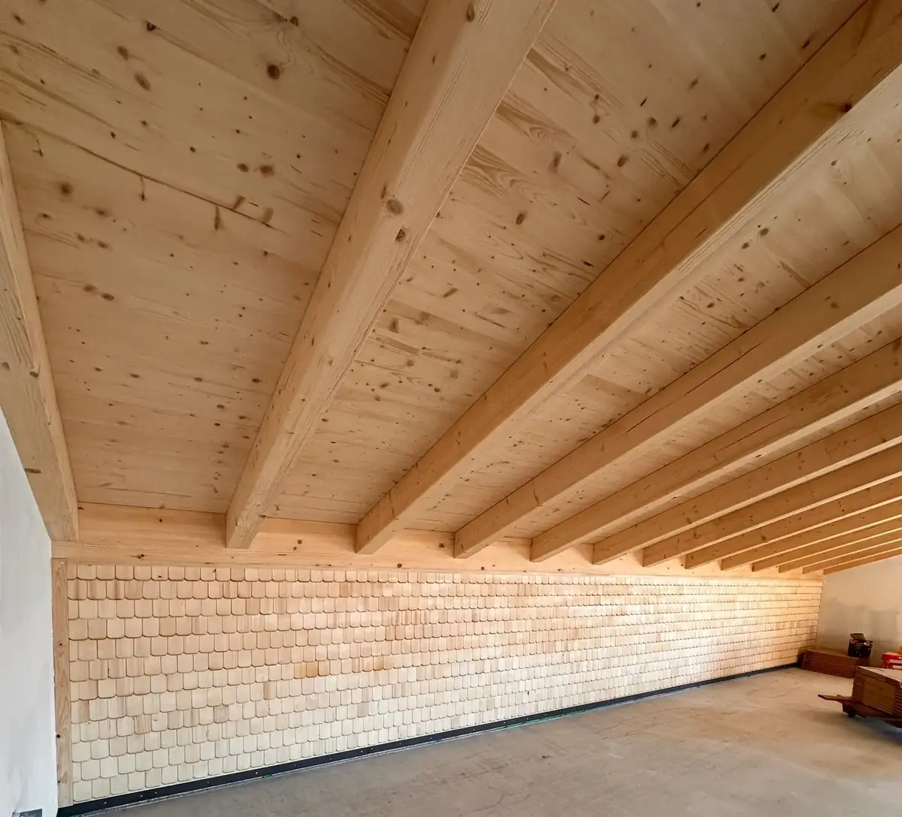

Eröffnung
Samstag, 7. November 2026
von 10 – 17 UhrMahden 1 · Deckenpfronn
Mi RuhetagWir freuen uns auf euch!
Noch – Tage. Mahden 1, Deckenpfronn

Special
am Eröffnungstag, Samstag, 7. November 2026
Aperol Spritz
5 €
Spiegeleibrot


Im Hofladen
Direkt von unserem Legehennenbetrieb
Frische Eier und regionale Produkte – manches von unserem Hof, vieles von Erzeugern aus der Umgebung. So sah unser Sortiment bisher im Hofbus und auf den Märkten aus:
- Eier
- Eierlikör aus eigener Herstellung
- Äpfel und Birnen vom eigenen Baum
- Nudeln, Linsen und Mehl
- Honig und Marmelade
- Wurst, Fleisch und Käse
- Obst und Gemüse
- Brot, Wein und Eis


Im Hofcafé
Auf einen Kaffee am Hof
Viel Holz und große Fenster: Im neuen Haus haben wir Platz für ein Café geschaffen. Die Espressomaschine ist schon eingezogen.
Wie das Haus entstanden istÖffnungszeiten
ab 9. November
| Mo, Di, Do, Fr | 9 – 12 & 14.30 – 17.30 Uhr |
|---|---|
| Mittwoch | Ruhetag |
| Samstag | 9 – 12 Uhr |
Schneiders Hofladen & Hofcafé, Mahden 1, 75392 Deckenpfronn – direkt bei uns am Hühnerhof.
AnfahrtAußerdem
Ihr findet uns auch unterwegs


Rund um die Uhr offen: unser SB-Lädle in der Calwer Straße 27/1. S'Lädle isch immer offa.
Kurz & knapp
Schneiders Hofladen & Hofcafé ist der Hofladen mit Café von Hühnerhof Schneider, einem Familienbetrieb in dritter Generation mit Legehennen. Adresse: Mahden 1, 75392 Deckenpfronn bei Herrenberg (Landkreis Böblingen). Geöffnet ab 9. November 2026 Mo, Di, Do, Fr 9–12 und 14.30–17.30 Uhr; Samstag 9–12 Uhr. Mittwoch Ruhetag. Telefon 0177 2136695.
Wo kann ich in Deckenpfronn Eier kaufen?
Im Hofladen in Mahden 1 (ab 7. November 2026), rund um die Uhr im SB-Lädle in der Calwer Straße 27/1 und im Hofbus, der ebenfalls in der Calwer Straße 27/1 hält.
Wann hat der Hofladen geöffnet?
Ab 9. November: Mo, Di, Do, Fr 9–12 und 14.30–17.30 Uhr; Samstag 9–12 Uhr. Mittwoch Ruhetag. Am Eröffnungstag, Samstag 7. November 2026, von 10 bis 17 Uhr.
Wo hält der Hofbus?
Deckenpfronn: Mo, Do 16–18 Uhr; Freitag 8–12 Uhr; Samstag 10–12 Uhr (Calwer Straße 27/1, 75392 Deckenpfronn). Holzbronn: Dienstag 15–17 Uhr (Rathaus im Ortskern, Calw-Holzbronn). Gültlingen: Freitag 14.30–17.30 Uhr (Bushaltestelle Ortskern, Wildberg-Gültlingen).
Auf welchen Wochenmärkten seid ihr?
Böblingen: Mittwoch vormittags. Mittwochs auch mit frischem Obst und Gemüse (Elbenplatz, Böblingen). Gärtringen: Samstag 7–12 Uhr (Marktplatz, Gärtringen).
Kontakt & Anfahrt
Mahden 1, Deckenpfronn
0177 2136695 info@huehnerhof-schneider.de@huehnerhof_schneider auf Instagram (neues Fenster)
SB-Lädle: Calwer Straße 27/1, 75392 Deckenpfronn
Wir freuen uns auf euch!